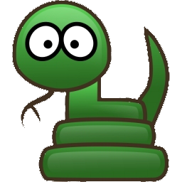

3D Snake
Developed with LWJGL
The purpose of this page is to overview my implementation of
Snake3D.
Language use
The language uses to create that game is Java, in particular the LWJGL
library that allow OpenGL utilisation.
Architecture
The application is developp use the design Pattern
"States". Here
is the list of states :
- Menu : Displaying the Menu
- HighScore : Displaying the highiest scores
- Game : Running the game
- Countdown : Countdown before the game starts
- Restart : Create a new game
- Perdu : Displaying the final score, save it.
Each states will indicate to the controller (a Java Classe) the next
state to launch.
Seting up, launching and options
To run the application, unzip Snake3D.zip and launch the link
according to your operation System. You can modify the maze by editing
the file ""maze.txt". Each line correspond at a wall position. Number
must be between -100 and 100. (0,0) is the middle of the map. You can
also have a look at "options.txt". Here you can set : the default
number of apple on the field, and the two different snake speed. Just
increase the speed to make it faster, decrease to make it slower. You
can set the normal Speed, and the bullet-time speed.
User Manual
The application start with a menu. Three options are available :
Start, which will launch the game
Key shorcuts
There are some keys that you can press during the execution. Here is a
list of what they do :
- A : These key enable and disable full screen for
the application.
- V : These key allows, when a game is started, to
switch bet ween two cameras : a fixed one, and another one following
the snake.
- R : If a game is started, the press of this key
will start a new game.
- Escape : If your the menu, it will quit the game.
An other screen, it will bring you back to the menu.
- B : Bullet Time. The user have a limited number of
Bullet-Time. Each time you press that Key, the game will slow down
for some seconds. Quiet useful to go next to the wall !
You can also try "U","I" and "O", and see what it does for the snake head.
Items
Here is a list of the item you'll find on the map
- Apples : Those are the classice Apples, it allows you to
grow up and win some points !
- Gold Apples : Those apples will appears less often on the
field. They make you earn more points for a limited time.
- Blue Apples : Those apples cut the snake tail, and remove
half of it.
- Walls : just an advice, don't it them.
- Snake : This is the object you control. And a quick
remberer, snakes don't do cannibalism.
Enjoy your play !
Nicolas Desfeux - Erasmus Student
Newcastle University -
December 2012.